生活、工作中基本用不到，兴趣使然……
等待收集中……
这两天遇到一个尴尬的问题：上学时的旧电脑（戴尔 Vostro 1088），想让他发挥一下余热，于是找了一个硬件要求比较低的 Linux 发行版，选中的是
在上面的场景下，查了一下，查到的解决办法是：无图模式下拷贝U盘中的镜像文件到电脑的某个位置，之后用
这里用的是存储着Linux镜像的U盘
# 主文件夹打开终端
# 查看主文件夹的内容。
ls
# 查看硬盘及分区信息，找到目标U盘
sudo fdisk -l
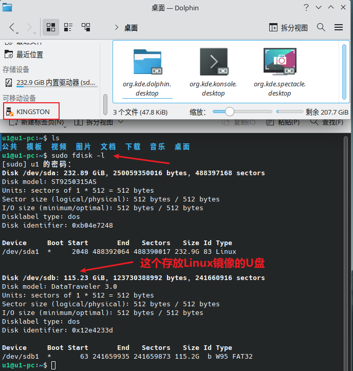
在根目录创建
# 进入根目录
cd /
# 和下面创建 usb 之后的 ls 对比
ls
sudo mkdir usb
ls
# 挂载U盘
sudo mount /dev/sdb1 /usb
# 查看U盘内容
cd usb
ls
cd software
ls
cd linux
ls
cd os
ls
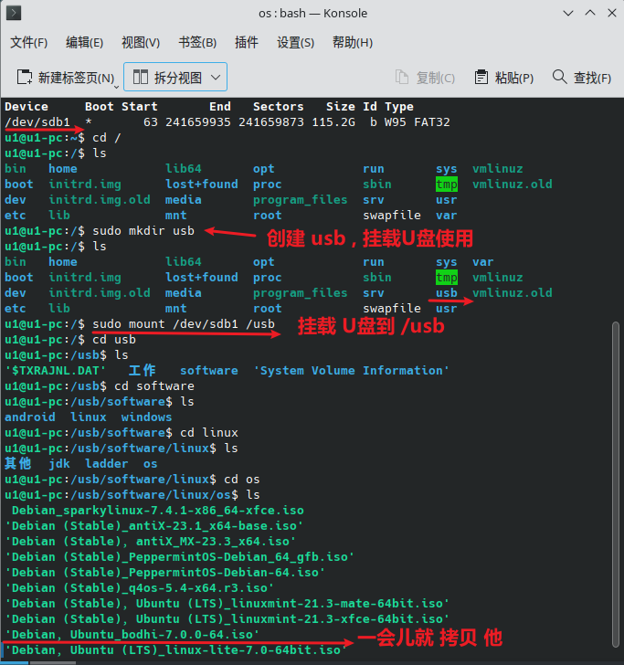
上面的挂载U盘并不是第一次操作，之前还进行过一次。下面是第一次操作时的截图，稍微有点不同：
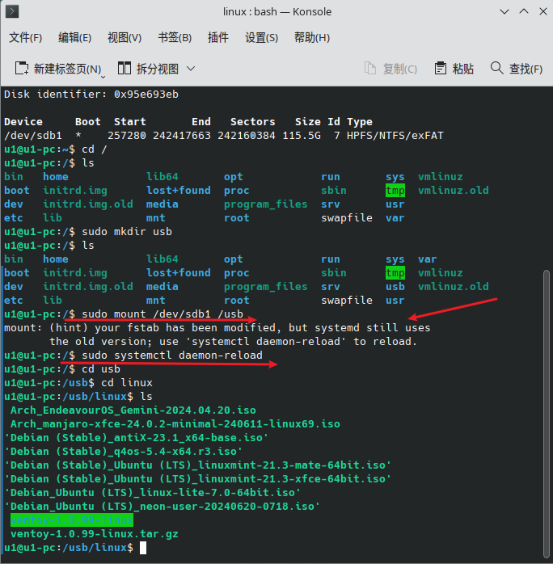
# 拷贝文件到主文件夹
cp 'Debian, Ubuntu_bodhi-7.0.0-64.iso' /home/u1/bodhi-7.0.0-64.iso
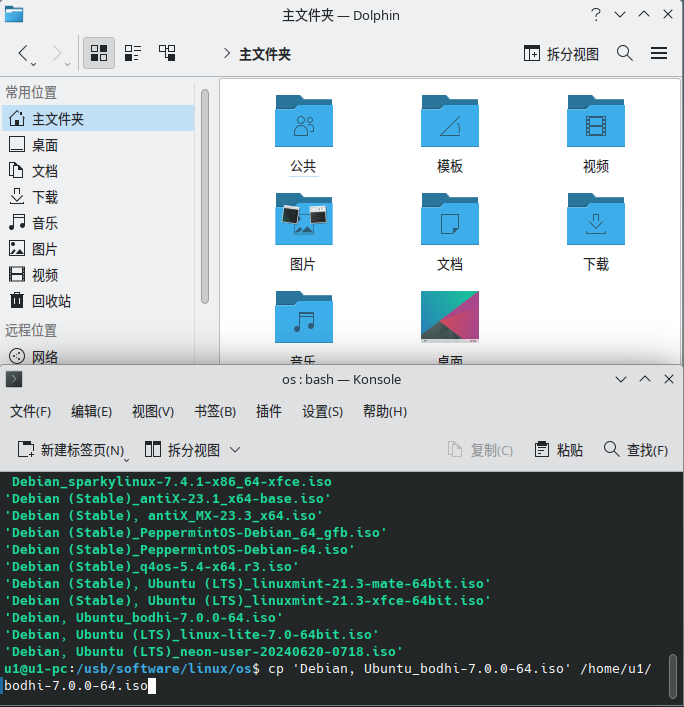
下面是拷贝成功的截图，如下：
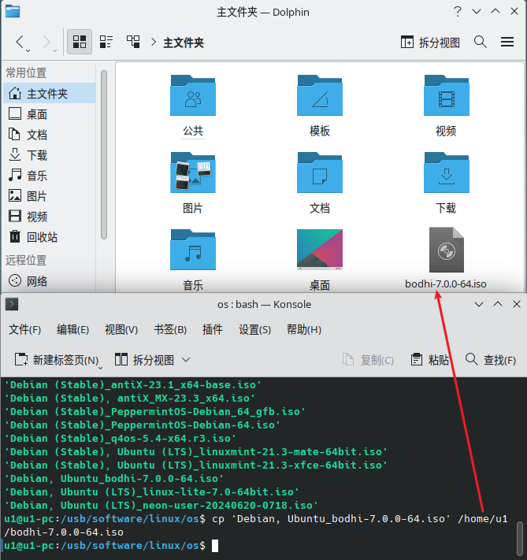
cd /
# 卸载U盘
sudo umount /dev/sdb1
# 再次进入 /usb 看一下
cd /usb
ls
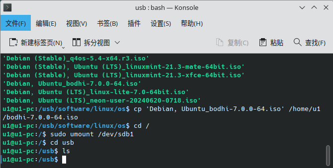
接着上面拷贝的 Linux 镜像文件，这里利用
注意：这里的U盘已经换了，不是上面的那个了，是另一个
cd /
# 查看硬盘及分区信息，找到目标U盘
sudo fdisk -l
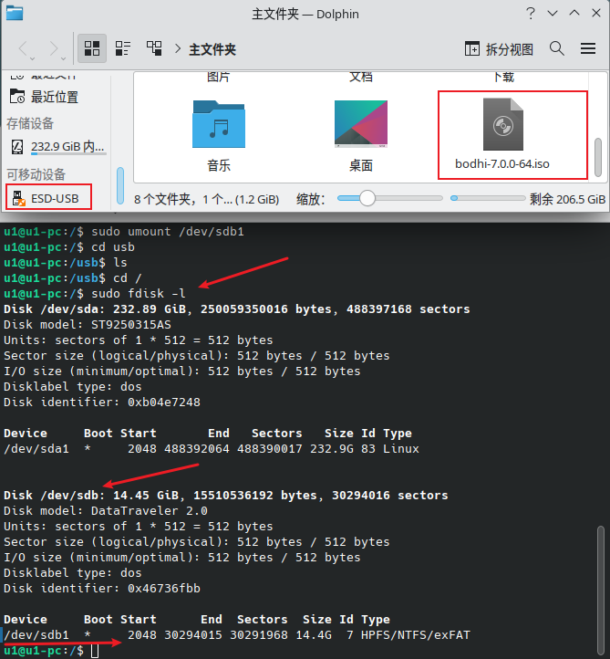
格式化U盘需要卸载U盘。如果没有挂载，可以跳过这一步
# 卸载U盘
sudo umount /dev/sdb*
cd /usb
ls
# 格式化U盘
sudo mkfs.vfat /dev/sdb -I
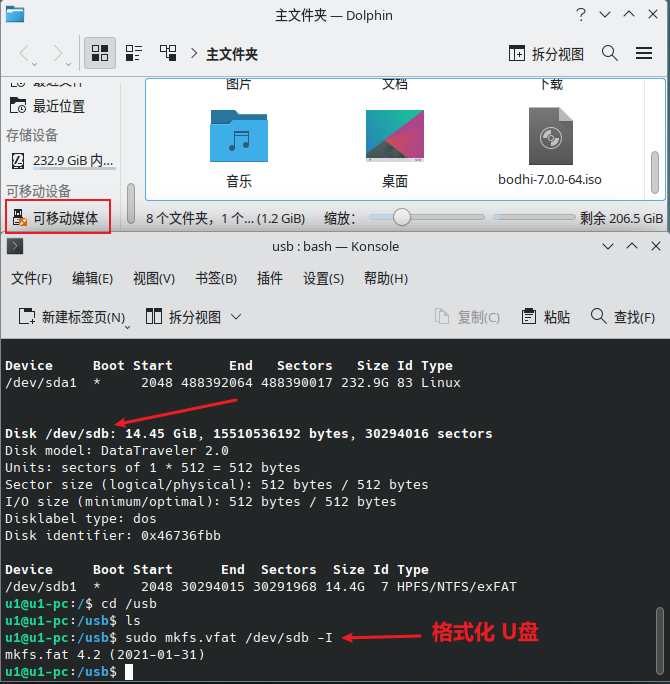
cd /home/u1
ls
# 制作启动U盘
sudo dd if=/home/u1/bodhi-7.0.0-64.iso of=/dev/sdb status=progress
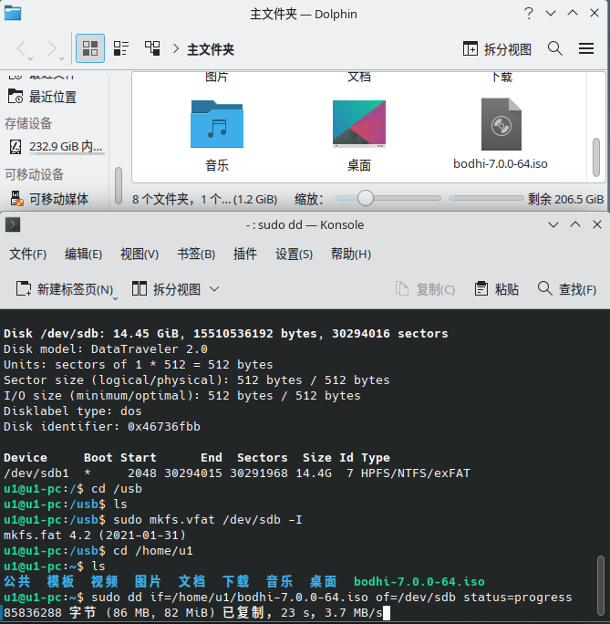
下面是制作完成的截图，如下：
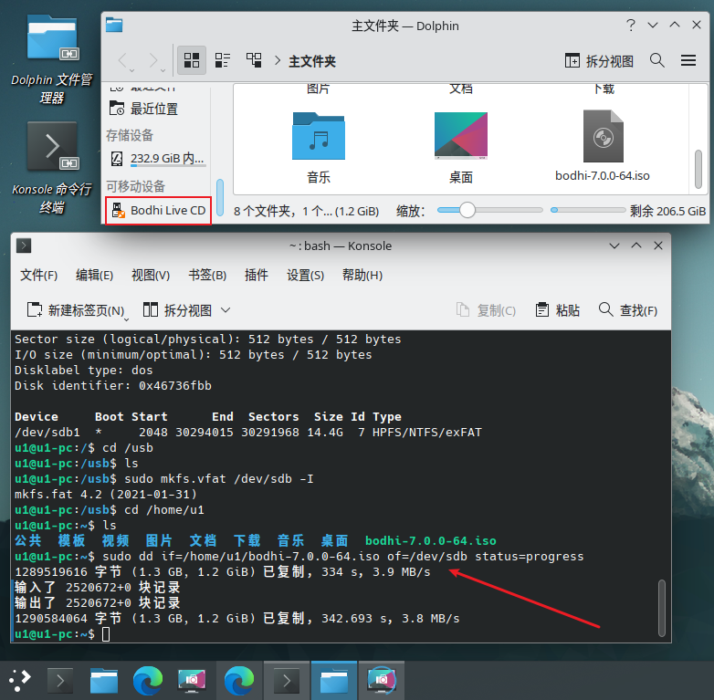
再来一个U盘启动，安装
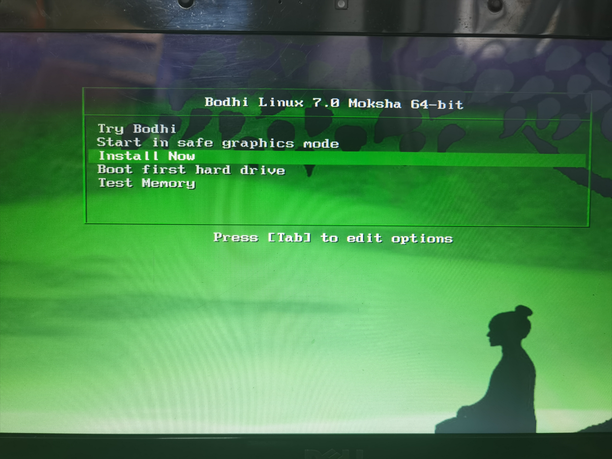